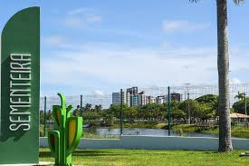

Orla de Atalaia

Na Orla de Atalaia existem opções de lazer como bares e casas de dança e música, além de barracas de água de coco e quadras de basquete futebol, tênis e uma pista de skate. Considerada uma das mais bonitas do Brasil ofereçe aos cidadãos e turistas o que há de melhor em lazer e entretenimento.
Parque da Sementeira

O parque pode ser utilizado pelos aracajuanos e turistas para prática de atividades esportivas e de ,lazer , pesquisas ambientais além de outras atividades em contato com a natureza. O espaço conta com parque infantil, campo de futebol quadra poliesportiva, espaço com aparelhos para exercícios físicos, pista de caminhada, quiosques para piqueniques, sanitários, lagos, e iluminação adequada.